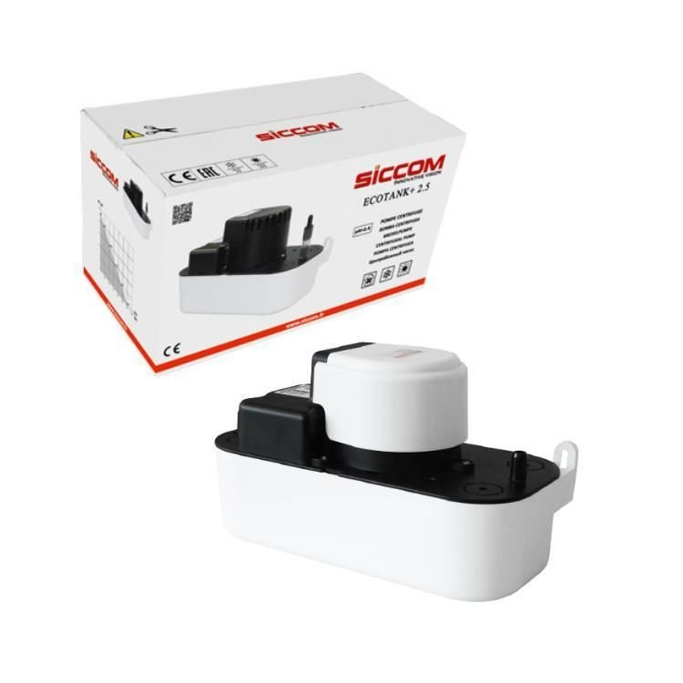
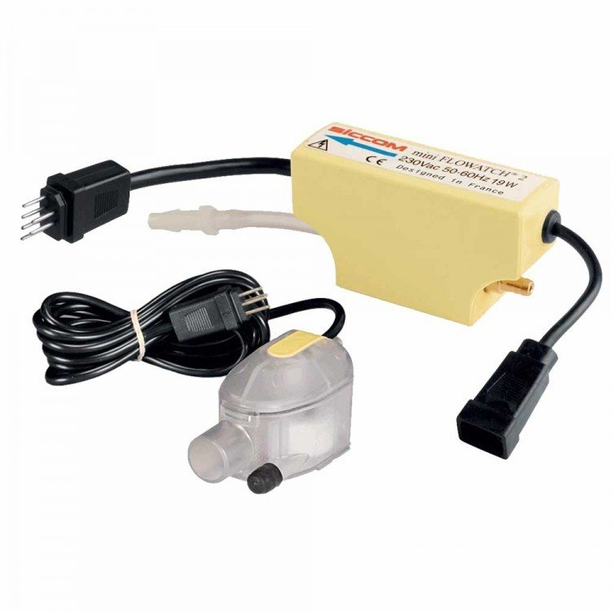

☎ 0216 344 48 19
Klimasun, 9 ürünle Siccom markasının endüstriyel iklimlendirme çözümlerini sunar. Drenaj Pompaları kategorilerinde orijinal tedarik ve Avrupa'dan sipariş imkanı.



Evet. Klimasun Siccom ürünlerini ve yedek parçalarını orijinal olarak tedarik eder; kataloğumuzda 9 Siccom ürünü listelidir.
Evet, tüm ürünler orijinaldir. Stokta olmayanlar Almanya ve İtalya'dan sipariş üzerine temin edilir.
Ürünü teklif sepetine ekleyip WhatsApp (0532 424 6219) veya e-posta ile iletin; hızlıca kurumsal teklif alırsınız.